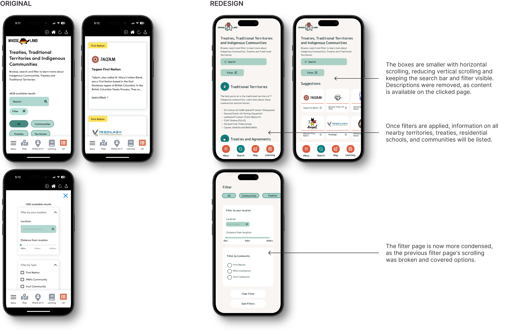
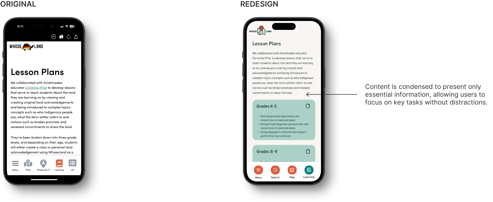
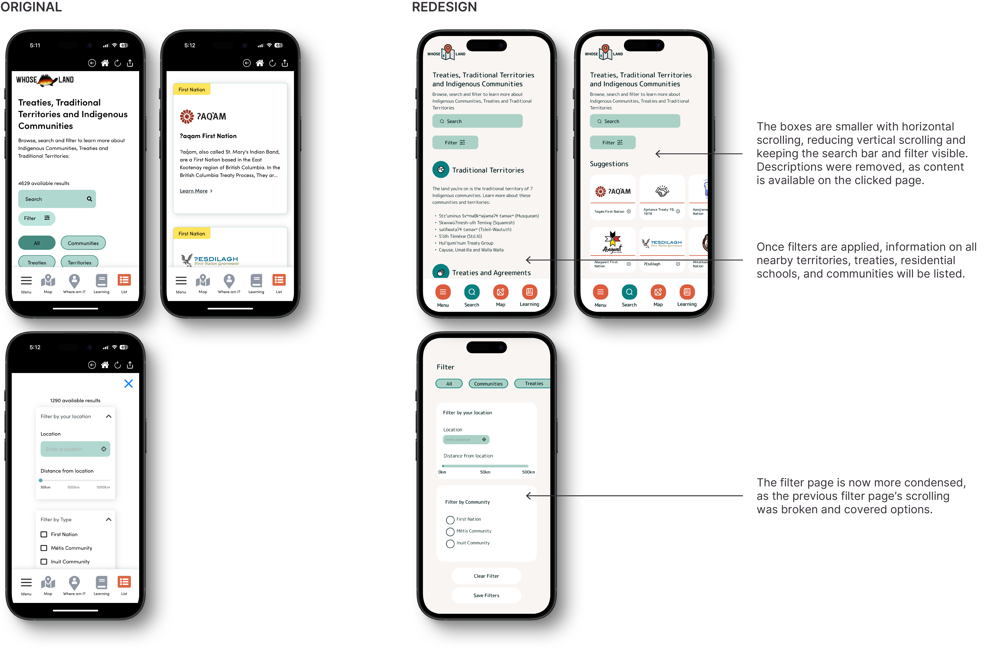
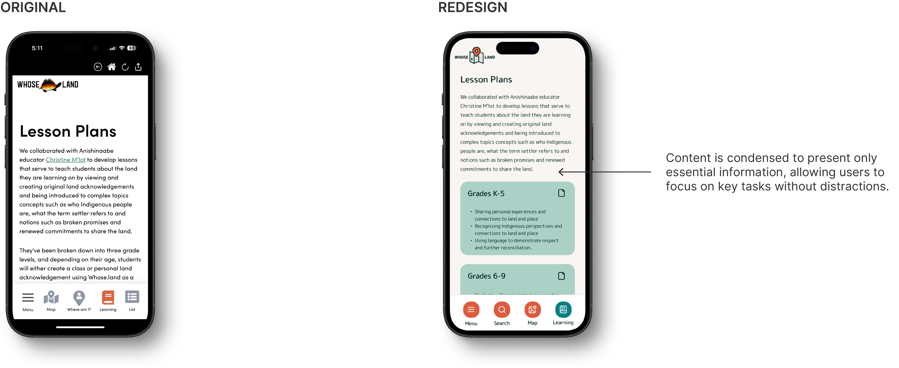

UNIVERSITY PROJECT | UX/UI REDESIGN | TIMEFRAME: 24 DAYS
Whose Land is an educational app designed to map Indigenous territories and enhance cultural understanding. It transforms how users engage with Indigenous lands by providing an interactive map and valuable educational resources.
The app's core mission is to empower users with clear, accessible information and comprehensive insights into Indigenous communities, fostering deeper connections and respect for Indigenous histories and cultures.
Test Project PrototypeUsers exploring Indigenous territories may face challenges due to unclear and inaccessible information about specific communities nearby.
This can create stress and difficulty when trying to engage with Indigenous lands and cultures digitally. Clear guidelines and accessible information are crucial to improving the user experience, enabling meaningful interaction with Indigenous histories and territories.
I want to pinpoint the main challenges users face with the Whose Land app in finding information about Indigenous territories and communities. Understanding these issues will guide the creation of a tool to enhance user comfort and usability. This new feature will seamlessly integrate into the app's original design, focusing on improving navigation, access to Indigenous knowledge, and overall user experience when exploring Indigenous cultures and histories.
Usability testing of the current application aims to understand how users interact with it and identify any pain points they experience. 4 users participated in this test. For this test, I prepared 3 tasks for users to complete. These tasks include:
Discover how to build your own land acknowledgements
Find out more information about Musqueam First Nation
Locate all Indigenous communities in Northwest Territories
Task 1 was almost completely unsuccessful, however one users results were inconclusive. This is because "the Building Acknowledgements button just leads to the Learning section and it just seems unnecessary". In Task 2, users completed the task using the search engine, but they had trouble locating it and found it by process of elimination. Task 3 was 75% successful. The user who didn’t complete the task said it was because they weren’t sure where the Northwest Territories were.

Name: Andrew Yeon Age: 20 Occupation: Student
Andrew is currently enrolled in Indigenous Studies at the University of British Colombia. As a university student, he is assigned a research project on Indigenous backgrounds, history and communities near him. Andrew wants to be able to see all the communities his home is situated on, but does not know where to find the information.
To address the needs of the user, a card sorting was performed with 2 users. It helps match the app’s layout with how users naturally group and label information and improves navigation by placing categories logically.
Given this, I want to simplify the experience by making the menu and categories more clear so users can find what they need quickly. As well, I can place sub-categories in more logical, easily accessible locations.
Why are users having difficulty finding information more quickly?
I created low fidelity sketches based on the information architecture that I created previously.
 


